Вот задачи, отмеченные на этих состязаниях высшими отличиями.
Победителями первого конкурса стали Котц и Коккелькорн. В задаче № 000 в центральном варианте
№ 000
И. Бергер Конкурс Германского шахматного союза 1879 I приз
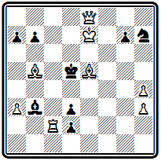
Мат в 4 хода
1. Cb 8 dc 2. Фс8 Кр d 4 3. Фс3+ Кр:с3 4. Се5 # или 3 ... Кре4 4. Ф d 3 # , 2... Кре4 3. Ф f 5 + Кр: f 5 4. Cd 3 # или 3... Kpd 4 4. Фе5# после двух вступительных ходов проходит решающая комбинация с аналогичными жертвами ферзя и четырьмя правильными матами. Дополнительные варианты: 1... Кре4 2. Ф g 6+ Кр f 3 3. Ф: d 3+, 1... Kpd 4 (С:с2) 2. Kpd 8 Кр c 5 3. Фе5+, угрозы 2. Ф f 7( d 7) + и 2. Kpd 8. Если основной идеей композиции считать жертвы ферзя и получающиеся затем правильные маты, то для ее выражения достаточно трехходовой формы, вступительный ход является лишней надстройкой, нарушено четвертое правило Бергера.
В. Шинкман осуществил такую идею в форме миниатюры
В. Шинкман «Дюбук чесс джорнэл» 1890
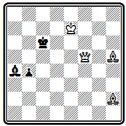
Мат в 3 хода
1. Се2 Кр b 6 2. Ф a 5+; 1... Кр b 7 2. Фс8 +
Однако эта надстройка представляет собой трудный тихий ход, весьма усложняющий решение и потому оправдываемый третьим правилом.
Главный вариант проблемы № 000 приводит к двум аналогичным жертвам ферзя и правильным матам на довольно далеком расстоянии друг от друга.
№ 000
Ф. Дуббе Конкурс Германского шахматного союза 1881 I приз
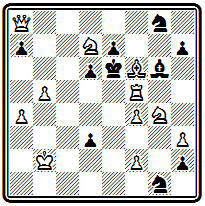
Мат в 4 хода
Черный король обнаруживает большую подвижность. 1. Сс3 С: f 5 2. Фс8 Kpd 5 3 . Ф c 4+ Кр:с4 4. Ке 3# или 2... Kpf7 3. Ф :g8+ Kp:g8 4. К h6# (2... С: g 4 3. Kf 6+, 2... Kh 6 3. Kde 5 +, 2... ~ 3. Ke 5( f 6) + ). Еще один правильный мат проходит в дополнительном варианте: 1... Кр: f 5 2. Кс5 К: h 3 3. Ке3+ Кр: f 4 4. Ке6# (1... К f 6 2. Kh 6 Кр: d 7 3. Фс6+; 1... h 1Ф 2. Kf 8+ Кр: f 5 3. Ке3+; 1… ~ 2. Фd5 + Кр: d 7 3. Фс 6+ ).
Классической по простоте и изяществу построения, тонкости и эффектности замысла является задача № 000.
№ 000
И. Бергер Конкурс Германского шахматного союза 1883 I приз
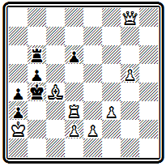
Мат в 4 хода
Тихими, казалось бы совершенно безобидными, ходами белые отдают две фигуры и завлекают черного короля в матовую сеть, где один ферзь с помощью пешек дает ему три правильных мата. 1. Л d 5 Кр:с4 2. Ф h 8 Кр: d 5 3. е4+ Крс6 4. Фс8#, 3... Кре6 4. Фе8# и 3... Крс5 4. Фс 3# . После первого хода — цугцванг; на 1... Л b 7 следует 2. Фd8, грозя матом после 3. Ф: d 6+ на 2... Лс7( b 6, b 8, d 7) — взятие ладьи; на 1... Кра5 решает также 2. Ф d 8 со взятием ладьи после единственного ответа черных 2... Кр b 4 3. Ф: b 6.
Сложная и трудная для решения позиция № 000 содержит в главном варианте интересную идею последовательного освобождения линий для далекого маневра белого ферзя.
№ 000
Ф. Шрюфер Конкурс Германского шахматного союза 1883 I приз
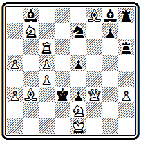
Мат в 5 ходов
Вступление 1. Са2 создает угрозу 2. Cb1+ Кр:с4 3. Фе4+. Черные защищают поле е4—1... С h 7, а после жертвы ладьи «по Новотному» 2. Л g 6, восстанавливающей угрозу, берут ладью 2... С: g 6, но теперь перекрыта черная ладья и можно пожертвовать коня 3. Kd 6 c угрозой 4. Cb 1#. Черные берут коня 3... С: d 6 — ведь это не создает у них никаких слабостей. Однако белые играли не на ослабление неприятельской, а на усиление собственной позиции. Угроза на е4 была отвлекающим маневром, позволяющим освободить дорогу ферзю к полю b1—4. Ф b 7. Теперь неизбежен чистый, а в случае 4... Л: f 8 даже правильный мат 5. Ф b1# . Каждый из трех первых ходов белых выполнял задачу расчистки пути для ферзя.
В несколько ином стиле составлена композиция № 000 .
№ 000
Ф. Шрюфер Конкурс Германского шахматного союза 1885 I приз
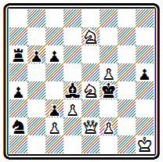
Мат в 4 хода
Тихими незаметными ходами ферзь и кони сплетают тонкую сеть, в которой запутывается черный король. 1. f 6 (с угрозой 2. Ф: h 5) 1... С: f 6 2. Kg 5 (черные собирались ходом слона на g5 опровергнуть угрозу, теперь же белые сами идут на это поле) 2... С:е7 3. Kh 7 Kpf 5 4. Фе4# или 2... Кр: g 5 3. Фе3+ Kpg 4 4. Фg 3# . Оба мата правильные. Третий правильный мат получается в варианте 1 ... С: f 2 2. Kg 6+ Kpf 5 3. Ф: h 5+ Кре6 4. Kf 8 # . На 1... Cc 5 проходит угроза 2. Ф: h5 С:е7 3. Kg3.
Задача № 000 — последний значительный конкурсный успех Бергера.
№ 000
И. Бергер Конкурс Германского шахматного союза 1887 I приз
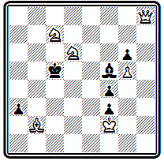
Мат в 4 хода
По своему характеру она существенно отличается от прежних работ. После 1. Фа8 грозит 2. С:а 3+ Kpd 4 3. С b4. Правильный мат получается в варианте 1... b а 2. Ф d 5+ Кр b 6 3. Ка8+ Кра6 4. Фа2# с использованием вскрытия вертикали «а»; на 2... Кр b 4 следует чистый мат 3. Фс4+ Кра 3 4. К b 5 #. Интереснее, однако, варианты, создаваемые слоном, хотя они и не кончаются чистыми или правильными матами: 1... Cd 7 2. Ке4+ Кр b 6 3. Сс3 Кр:с7 4. Са5 # и 1... Сс8 2. Ф d 5+ Кр b 6 3. Кс4+ Кр:с7 4. Се5 # — в обоих случаях белые используют блокирование поля у черного короля; любопытны разветвления 1... Кр: d 6 2. Се5+ Крс5 3. Фа5+ с двумя симметричными матами и 1... Кр b6 2. Ф b7+ Крс5 3. Се5, 1... Се4 2. К:е4 + Кр b6 3. Се5 с тихим ходом слона.
В примере № 000
№ 000
Р. Адам Конкурс Германского шахматного союза 1889 I приз
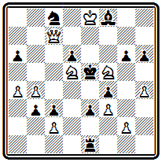
Мат в 4 хода
идейная игра получается при 1. Kg7 Kpd4 2. Kh5 gh 3. Ф h 7 Кр: d 5 4. Фе4# (2... Кр: d 5 3. Ф b 7+, 2... Кре5 3. Фс4, 2... ~ 3. Ф:с 3+ ); правильный мат получается еще в варианте 1... Кр: d 5 2. Ф b 7+ Кре5 3. Фе4+ Kpf 6 4. Фd4#. Остальные варианты: 1... С: g 7 2. Фс4(угроза) 2... Кре6 3. Ф: f 4, 1... Л f 1 2. Фс4 Л: f 3 3. gf , 1... Л d 1 2. Ф f 7(угроза) 2... С: g 7 3. Ф: f 4+.
Задача № 000 имеет всего один вступительный ход, а дальше следует трехходовый форсированный финал:
№ 000
О. Фусс Конкурс Германского шахматного союза 1892 I приз
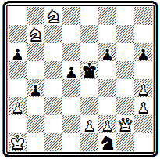
Мат в 4 хода
1. Фg7 d 4 2. Фс7+ Кре4(е6) 3. Kc 5+ Kpd 5 4. К b 6# и 3... Кр f 5 4. Ке7# или 2... Kpd ( f )5 3. Ке7+ Кре6 4. Kd 8 # и 3... Кре4 4. Кс5 #. Три первых из этих четырех матов правильные. Правильные маты осуществляются еще в угрозе 2. Kcd 6 ~ 3. Фе7+ Kpd 4 4. Ф: f 6 # и в дополнительных вариантах 1 ... Kpd 4 2. Ф: f 6+ Крс4 3. К b 6+ Кр b 5 4. а4 # и 1... b3 2. Фе7+ Kpd 4 3. Ф: f 6 + Крс4 4. Kcd6#.
Приведем еще несколько произведений приверженцев немецкой школы из числа премированных на других конкурсах.
Задача № 000 принадлежит австрийскому проблемисту Роберту Брауну, создавшему свой стиль.
Особенностью его задач было наличие элементов симметрии.
№ 000
Р. Браун Конкурс Средне Германского шахматного союза 1876 почетный отзыв
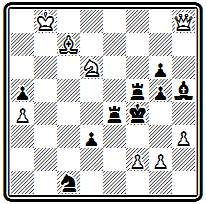
Мат в 4 хода
Создавая какой-либо интересный вариант, обычно заканчивающийся правильным матом, Браун добивался осуществления и второго симметричного варианта. В рассматриваемом примере ось симметрии видна уже в начальном положении —это диагональ b8-f4. Решение содержит два симметричных варианта с шахами белому королю и отвлекающими жертвами ферзя, приводящими к развязыванию коня и блокированию поля: 1. Фс 3 Л b 4+ 2. Kb 5 + Кре4 3. Ф d4+ Л: d 4 4. Кс 3# и 1... Л f 8+ 2. Ке8+ Kpf 5 3. Ф f 6+ Л: f 6 4. Kg 7 # .
Сборник избранных задач Р. Брауна был издан в уайтовской серии в 1913 г. (33).
В примере № 000 начальная позиция не обнаруживает никакой симметрии, но она появится в финале главного варианта.
№ 000
А. Каудерс «Нуова ривиста дель скакки» 1880 I приз
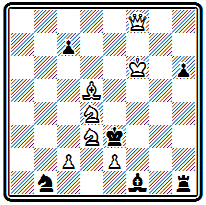
Мат в 4 хода
Решение достигается оригинальным и неожиданным маневром 1. Кре7 Кр: d 4 2. Кре8. Белый король, вместо того чтобы приближаться к черному, уходит на край доски с целью освободить путь своему ферзю. Необходимость выбирать безопасные поля и приводит к несколько вычурному маршруту. Дальше, в зависимости от ходов черного короля, следуют два симметричных правильных мата: 2... Кре3 3. Ф f 4+ Кр:е2 4. Cf 3# или 2... Крс3 3. Ф b 4+ Кр:с2 4. С b 3#, на 2... Кр: d 5 решает 3. Фс5+. Дополнительный вариант 1... Kpd 2 2. Ф f4 + Крс 3 3. К b5+.
Композиция № 000 отступает от принципов немецкой школы в том отношении, что в ней нет одного, ярко выраженного варианта, а замысел составляет комплекс нескольких вариантов, содержащих интересные моменты и заканчивающихся правильными матами.
№ 000
Р. Вейнгеймер «Нуова ривиста дель скакки» 1892 I V приз
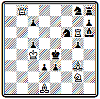
Мат в 4 хода
В трех идейных вариантах развертывается игра с тихими жертвами белых фигур для вскрытия линий: 1. Се 2 de 2. Kh4 gh(2... е 1 Ф 3. Фе 8+) 3. Ф b1+ Kpf3 4. Ф h1#; 1... Kpf5 2. Фе 8 К : е 8 (2... Ке 7 3. К : е 3+) 3. Kh4+ gh 4. С :d3#; 1... Cf8 2. Л :g5 de 3. Ф b1+ Kpf3 4. Ke1#. Дополнительные варианты 1... hg 2. Ф: c 7 de 3. Фс 6+; 1... Kd5 2. Фс 8 Kf4 3. Ле6+, 2... Kb 6+ 3. Л: b 6 и 2... de 3. Ф g 4+.
Построение четырехходовок такого стиля ставит чрезвычайные технические трудности, поэтому он стал развиваться главным образом в трехходовой форме. Рассмотрим еще задачу № 000, которую критика того времени признавала «задачей большого стиля».
№ 000
З. Штейнер «Амстердамер веекблад» 1898 I приз
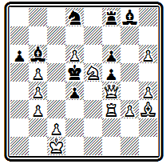
Мат в 4 хода
Главный вариант после 1. Ле3 de 2. Kf 7 разветвляется на ряд продолжений, заканчивающихся правильными матами: 2... Cd 4 3. Фе4+ Кр:е4 4. Cg 2# или 3... fe 4. с4#, 2... Кре 6 3. Ф :f5+ Кр :f7 4. Ф b5#, 2... К(Л, С): f 7 3. c 4+ Кре6 4. С: f 5#, 2... ab 3. Ф: f 5 Крс6 4. Фе4( f 3)#. Дополнительные варианты менее интересны: 1... ab 2. Cg 2 + Кре 6 (2... Кр: d 6 3. Кс4+) 3. Ф: f 5+; 1... С b~ 2. Kf 7 и 3. Ф: f 5+; 1... К~ 2. Ф f 3+ Кр: d 6 3. Фс6+.
В этом примере, как и в ряде уже рассмотренных произведений немецкой школы, перед нами выступает противоречие между отдельными пунктами кодекса Бергера. По существу задача представляет собой удлиненную трехходовку, в которой добавленное вступление не стало органической частью.
Возможны были два выхода из этого противоречия. Один состоял в том, чтобы идейные ходы белых объединить общим стратегическим замыслом, единой логической мыслью. Этот путь намечался уже в ранних задачах Котца и Коккелькорна, но решительно был провозглашен ими лишь в начале XX века, когда, порвав с традициями старых проблемистов и отказавшись от бергеровских правил, они заложили основы нового направления, так называемой логической школы.
Другой путь заключался в отказе от искусственного удлинения задачи, хотя бы оно состояло из тихих ходов и приводило к усложнению решения. Это был путь разработки трехходовых задач.
Рассматривая задачи немецкой школы, мы не привели почти ни одной трехходовки. Это не случайность. Практически наиболее соответствующими принципам школы оказались четырех - и пятиходовые задачи. Трехходовой форме немецкие проблемисты уделяли значительно меньше внимания и заметных успехов в ней не имели. Достаточно сказать, что почти во всех конкурсах Германского шахматного союза в разделе трехходовок победителями выходили иностранцы, в частности чехи (соответствующие примеры читатель найдет в следующей главе).
Исключение составляет задача № 000, разделившая I приз в конкурсе 1887 г.
№ 000
Р. Адам Конкурс Германского шахматного союза 1887 I приз

Мат в 3 хода
Главный вариант: 1. Ф h 7 dc 2. Kd 8+ Kpd 6 3. Ф h 2# или 2... Кр b 5 3. Ф b 1# с двумя далекими правильными матами ферзем. К третьему правильному мату приводит дополнительный вариант 1... Кр b 5 2. Фс2 Кр b 4 3. Ф b 2 # .
Приведем еще интересную, легко построенную трехходовку Бергера № 000, которую он поместил на титульном листе своего сборника 1914 г.
№ 000
И. Бергер «Франкфуртер цейтунг» 1887 I приз
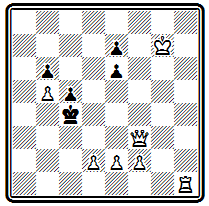
Мат в 3 хода
Первым ходом 1. Л f 1 ладья становится в засаду за пешку f2, чтобы поддержать ее в варианте 1... Kpd 4 2. Фd3+ Кре5 3. f 4#. Второй вариант с правильным матом: 1... Кр b 4(: b 5) 2. Л b 1+ Кра4 3. Фа8# (1… е5 2. Л b1 ).
В конце XIX века в Германии был организован ряд больших международных конкурсов, в том числе для трехходовых задач. Активную деятельность как критик, редактор и судья проявил А. Байерсдофер. Сборник его задач и критических статей был издан вскоре после его смерти И. Котцем и К. Коккелькорном под названием «К познанию шахматных задач» (34). Инициативе Байерсдорфера были обязаны тематические разделы на составление трехходовок с правильными эхо-матами в ряде конкурсов.
С одним из этих состязаний связан недостойный инцидент, вызвавший в свое время отклики во всей мировой печати. На конкурс газеты «Мюнхенер нейесте нахрихтен» 1893 г. поступила задача с шовинистическим девизом, представлявшим собой оскорбление чешского народа. Девиз тем не менее был опубликован в списке поступивших произведений. Чешские композиторы заявили справедливый протест и потребовали снятия девиза. Это сделано не было, и чешские участники вынуждены были снять свои задачи с конкурса. Вспоминая об этом инциденте, Хавель говорил, что он сильно повлиял на обострение отношений между чешскими и немецкими композиторами, как и длительное недружелюбное отношение И. Котца к чешской школе.
Наиболее активно разрабатывала трехходовые задачи группа венских композиторов: К. Эрлин, М. Фейгль, О. Немо и др.
В главном варианте композиции № 000 проводится острая идея отвлечения пешки путем жертвы ферзя
№ 000
К. Эрлин Конкурс Вюрцбургского шахматного клуба 1895 III приз
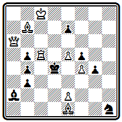
Мат в 3 хода
1. Фа3 b а 2. Лс3~ 3. e 3#. В дополнительном варианте реализуется мотив засады 1... b 2 2. Лс4+ bc 3. Фа7#, что стало возможно благодаря включению белого ферзя на поле е3. Третий правильный мат в варианте 1... Кр:с5 2. Ф: b 4+ (угроза) Кр b 6 3. Ф d4# .
Центральный вариант задачи № 000 содержит красивый тихий маневр ферзя, основанный на отвлечении черного слона:
№ 000
М. Фейгль Конкурс Германского шахматного союза 1892 III приз
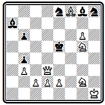
Мат в 3 хода
1. е4 С b 8 2. Ф f 1 с неизбежным 3. Фа1#, что раньше опровергалось ответом 2... b 5. К главной игре добавлена жертва ферзя для отвлечения коня и блокирования поля в угрозе 2. Ф d 6+ К: d 6 3. Cg 7# , комбинация, весьма характерная для задач венских авторов. Есть и третий правильный мат 1... Kpf 6 2. Ф d 8+ Кр: g 6 3. Kf 4#.
Отправным пунктом для венских композиторов служил все тот же кодекс Бергера: в задаче должен быть главный вариант с тихим ходом, жертвами, правильным матом; необходима также дополнительная игра, некоторая трудность решения и т. п. Однако вскоре появляются отклонения. Трехходовая форма позволяет заканчивать правильными матами не только главные, но и некоторые дополнительные варианты, грань между ними стирается, содержание задачи определяется не одной главной игрой, как прежде, а всем комплексом вариантов, заканчивающихся правильными матами.
Приведем несколько примеров. Позиция № 000 содержит ряд вариантов, заканчивающихся правильными матами:
№ 000
О. Немо Конкурс Горлицкого шахматного клуба 1886 специальный приз
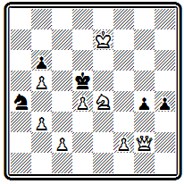
Мат в 3 хода
1. Ф g 1 (угроза 2. f 3 gf 3. Kf 6#) 1... Кр: d 4 2. Kpd 6 Kp :е4 3. Ф: g 4#; 1... Кр:е4 2. Ф: g 4+ Kpd 5 3. с4#; 1... Кс3 2. К f 6+ Кр: d 4 3. f 4#; 1… Кс5 2. Kf 6+ Кр: d 4 3. Фа1 # .
Задача № 000 построена в таком же плане, только маты здесь несколько сложней.
№ 000
К. Эрлин «С.-Пб. цейтунг» 1898 II приз
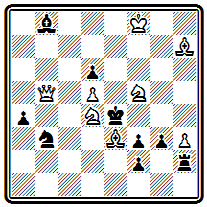
Мат в 3 хода
Первый ход 1. Cg 5 создает угрозу 2. Ке6; при ответе 1… Л: h 3 и затем 2... Л: b 7 угроза заканчивается правильным матом 3. K : g 3 #. Тихий ход с жертвой коня осуществляется в варианте 1... Ка5 2. К: f 3 Кр: f 3 3. Kh 4#; блокирование поля используется при 1... Кс5 2. Ке3+ Кр: d 4 3. Ф b 2# и 1... К: d 4 2. К: d 6+ Кре5 3. Kf 7 # . Ложные следы: 1. К c 6? Ка5 и 1. Ке6? Кре5 2. Kh 6 Кс5.
Разнообразием матовых картин интересна проблема № 000.
№ 000
М. Фейгль «Бритиш чесс мэгезин» 1897 II приз
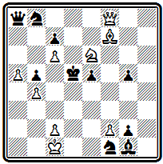
Мат в 3 хода
Варианты все форсированные, жертв нет, и весь ее смысл именно в сочетании правильных матов: 1. c 3(угроза 2. Kc 5+) 1... Кре4 2. Кс5+ Kpf 5 3. Ch 5#; 1... Kd 7 2 Kf 4+ Kp :с6 3. Cd 5#; 1... Кр:с6 2. Kd 8+ Kpd 7 3. Ce 6#; 1... Kpc 4 2. Kf 4+ Крс3 3. Ке2#.
Подобные задачи венских авторов приближаются к произведениям чешской школы, но они сохраняют некоторые особенности, не позволяющие отнести их к этому стилю.
Задача № 000, наоборот, лишена разнообразия матов, во всех трех идейных вариантах фактически дается один и тот же правильный мат ферзем по большой диагонали. Однако приходят к нему белые во всех случаях разными путями, используя различные ослабления в позиции черных.
№ 000
М . Фейгль « Афтонбладет » 1899 I приз
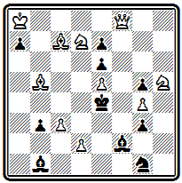
Мат в 3 хода
1. С b 6(с угрозой 2. d 3+) 1... С: b 6 2. Ф f 1 Ке2 3. Ф g 2# — черные открыли путь ферзю к полю f1; 1... ab 2. Кра7 ~ 3. Фа8# — черные перекрыли слона f2, и король может освободить поле ферзю; 1... Kpd 5 2. Фс8 Кре4 3. Ф b 7# —до хода короля ферзь не мог оставить без охраны поле f3.
Венские композиторы развили большую активность. По стилю к ним примыкал ряд проблемистов других стран, как, например, Э. Прадинья (Франция), И. Иесперсен (Дания) и В. Марин (Испания).
В конце XIX века этот стиль преобладал на конкурсах трехходовых задач, проводившихся на континенте Европы. Он продолжал развиваться и в начале XX века. Иногда этот стиль называют даже школой, именуя ее венской или континентальной. Это не совсем правильно. Для того, чтобы считаться школой, у данного направления нет достаточной самостоятельности. Правильнее, как это и делает ряд авторов, считать его ветвью немецкой школы с некоторыми стилевыми особенностями, отличающими его от основной линии.
Мы ничего не говорили в настоящей главе о двухходовках.
Отношение немецкой школы к этому виду задач наиболее полно выразил А. Байерсдорфер:
«Двухходовка — в лучшем случае остроумная игра; я не могу считать ее за задачу. Подумайте — одноходовая комбинация.
Не двухходовая, а именно одноходовая, так как матуюший ход не принадлежит к самой комбинации, он ее результат».
Немецкие композиторы над двухходовками работали очень мало. Открытия американских и английских композиторов их не интересовали, а выдвинутые ими принципы построения задач они категорически отвергали.
Позиция № 000 содержит острый первый ход, жертвующий ферзя и открывающий шах белому королю:
№ 000
И. Котц и А. Коккелькорн «Остеррехише лезегалле» 1881
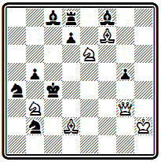
Мат в 2 хода
1 . Ф d 6 С: d 6 + 2. Kf 4 # . Мотивировкой хода служит перекрытие черной пешки d7, препятствующей в начальном положении мату слоновой батареей. Правильных матов нет, чистый мат получается при взятии коня пешкой 1... de 2. Ка5 # .
Задача № 000 также выделяется ярким первым ходом, жертвующим ладью и выключающим из игры своего ферзя —
№ 000
И. Бергер «Детройт фри пресс» 1876 II приз
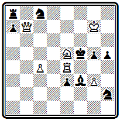
Мат в 2 хода
1. К c 6. Грозит 2. Kd 4#, на взятия ладьи следуют два правильных мата 1... Кр:е4 2. Ф b 1# и 1... С:е4 2. Ф d 7#. Чистый мат проходит при использовании блокирования поля 1… g 4 2. Ле5 #.
Двухходовка № 000 интересна тем, что в начальном положении готовы ответы на все ходы черных.
№ 000
Р. Лерме «Нью-Йорк штатс цейтунг» 1894 I приз
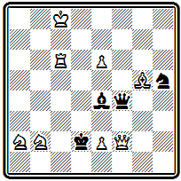
Мат в 2 хода
Но у белых есть лишь один ход 1. Ch 6, не предоставляющий черным никаких новых возможностей. Пешка е2 проявляет максимальную активность: 1… Ф g 5(: h 6) 2. e 3#, 1... C ~ 2. е4# (этот мат правильный, если слон берет ладью 1... С:с6), при 1… Cd ( f )3 пешка берет слона 2. ed ( ef )#.
Приводим один пример двухходовки из работ проблемистов венской группы (№ 000).
№ 000
М. Фейгль «Ауструмс» 1897 I приз
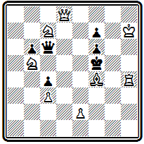
Мат в 2 хода
Как обычно, здесь имеется несколько вариантов, содержащих правильные маты: 1. Фа8 Кре4 (Ф:а8) 2. Kd 6#, 1... Ф: b 5 2. е4# и 1... Ф:с7 2. Kd 4#.
К концу XIX века классическая немецкая школа фактически прекращает свое существование. Продолжает развиваться только одна ее ветвь, разрабатываемая венской группой проблемистов. В начале XX века на базе немецкой школы разовьется новое направление, возглавляемое Котцем и Коккелькорном, которое получит название новонемецкой, или логической, школы.
Глава 9
ЧЕШСКАЯ ШКОЛА
Кениг — основоположник чешской школы. Конкурсы журнала «Светозор». Добруский. Хохолоуш. Поспишил.
Сборник «Чешские шахматные задачи» и принципы чешской школы. Творчество чешских композиторов
Книга, всесторонне освещающая историю чешской школы, еще не создана. Имеются лишь отдельные статьи и воспоминания, написанные ветеранами чешской композиции. Сюда прежде всего относится пространная рукопись доклада И. Хохолоуша по истории чешской задачной композиции, подготовленного им для шахматного съезда в Брно в 1907 г. которая хранится в библиотеке Пражского шахматного клуба. Большая статья Я. Котрча увидела свет в 1928 г. в немецком задачном журнале «Промадас». Интересные воспоминания о выдающихся представителях ранней чешской школы оставил М. Хавель. Пользуясь всеми этими материалами, а также теоретическими статьями, опубликованными чешскими авторами в разных журналах, сборниками задач, отчетами о конкурсах, можно довольно полно воссоздать картину развития этого направления.
Чешская школа возникла в 60-х годах прошлого века. Ее признанным основоположником являлся художник Антоним Кениг. Первые свои задачи он напечатал в гг. Затем около четырех лет Кениг находился в Мюнхене, где совершенствовался в живописи. Здесь он начал серьезно заниматься шахматной композицией. Вернувшись в Прагу, он в гг. напечатал в отделе «Родинна кроника» основные правила составления шахматных задач.
С 1868 г. Кениг редактирует шахматный отдел в журнале «Светозор», которому суждено было сыграть большую роль в формировании чешской школы и стать первым ее центром. В этом отделе выдвигаются сподвижники Кенига - Маковский, Квичала, Пацлт и Дртина. Последний в 1868 г. завоевал I приз в конкурсе Западногерманского шахматного союза — первое отличие чешского композитора на международном конкурсе.
И. Дртина
Конкурс Западногерманского шахматного союза 1868 I приз
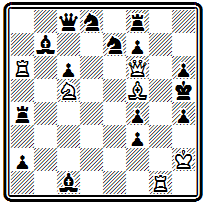
Мат в 5 ходов
1. Ла5 Л:а5 2. Лg4 К: f 5 3. Ке4 Кр: g 4 4. Ф g5 + hg 5. К f 6 # .
Журнал «Светозор» организует первые конкурсы составления задач и проводит их систематически на протяжении ряда лет.
Наконец, в этом журнале помещается большая теоретическая работа Кенига «Краткий трактат о шахматных задачах», печатавшаяся в течение января— апреля 1869 г. (35).
Здесь Кениг изложил свое понимание сущности композиции. Он считал, что шахматную задачу надо рассматривать прежде всего как произведение искусства, что она должна удовлетворять определенным эстетическим требованиям. Как и в любом другом виде искусства, в задаче должны быть заложены некоторые идеи: « как без души нет жизни, так и без красивой идеи нет шахматной задачи ».
И, наконец, самое главное, задачной идеей может быть не только идея, относящаяся к игре, но и идея конечного положения, идея красивого правильного мата .
Это было новой системой взглядов на композицию, на долгие годы определившей путь развития чешской задачи.
Как проблемист Кениг больших успехов не достиг. Он участвовал в Лондонском конкурсе 1862 г. и получил там почетный отзыв.
Задача № 000 из этой посылки. Легкое построение, четкая игра приводят к финалу с тремя правильными матами:
№ 000
А. Кениг Лондонский конкурс, 1862, Почетный отзыв
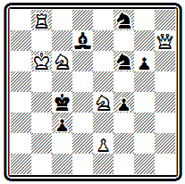
Мат в 5 ходов
1. Фе7 Kd 5+ 2. Кра7 К:е7 3. Л b 4+ Kpd 5 4. Л b 5+ и либо 4... Кре6 5. Kd 8#, либо 4… Кр:с6 5. Лс5#, либо, наконец, 4... Кр:е4 5. Ле5# (2... К b 6 3. Л: b 6 Kpd 5 4. Ф d 6+ или 2... Ке 6 3. Фс5+). Дополнительные варианты: 1... Кр b 3 2. Кра7+ Крс2 3. Kd 4+ Kpc 1 4. Фа3+ и 1... К g 4 2. Фс5 + Кр b3 3. Кра6+ Крс2 4. Ф:с 3+ .
Кениг завоевал несколько отличий в конкурсах «Светозора», в том числе I приз во втором конкурсе 1871 г.
Однако сам он выше всех своих произведений ставил позицию № 000.
При изящном построении в тихих вариантах осуществляются две аналогичные игры с красивыми правильными матами:
№ 000
А. Кениг «Светозор», 1868 г.
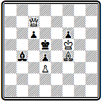
Мат в 3 хода
1 . Cd 6 C : d 6 2. Фd8 Крс5 3. Фа5# и 1... Сс5 2. Фа5 Кр: d 6 3. Фd8#. Интересна дополнительная игра 1... Са3 2. С:а3, 1... С~ 2. Фd7, 1... с5 2. Cf 8.
Конкурсы «Светозора» проводились для чешских авторов на составление трехходовых задач. Первые четыре года, с 1870 г., такие состязания проходили ежегодно, пятый был проведен в 1877 г., а последний, шестой, состоялся лишь в 1885 г.
Проблема № 000 получила высшее отличие на первом конкурсе.
№ 000
А. Квичала «Светозор», 1870 г. I приз
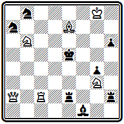
Мат в 3 хода
После хорошего вступления 1. Лс3, жертвующего белого ферзя, возникает угроза 2. Ф d 5+. Главные варианты получаются при игре черной ладьи: 1... Л:а2 2. Ле3+- Kpd 4 3. Kf 5# и 1... Л d 2 2. Фе 6+ Кр:е 6 3. Ле 3# .
Два одинаково красивых, хотя и совершенно различных по рисунку, правильных мата производят большое впечатление.
Добруский позже говорил, что это была первая настоящая задача чешского стиля.
Очень красива по построению задача № 000, победительница четвертого состязания «Светозора»,
№ 000
К. Маковский «Светозор», 1873 г. I приз
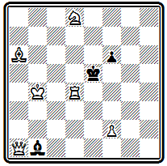
Мат в 3 хода
в которой два правильных мата получаются в главном варианте 1. Cd 3 (с угрозой 2. Фа 6) 1... С: d 3 2. Ф h1 Кр: d 4 3. Кс 6# или 2… f 5 3. Ф h 8 #.
Хохолоуш в упомянутом докладе дает периодизацию развития чешской школы. Первый период (эра Кенига, как он его называет) охватывает 1860—1871 гг. Второй период начинается «в январе 1871 г., когда в отделе «Светозора» была напечатана первая задача не известного до того автора, знаменитого Я. Добруского».
«Эра Добруского», которую Хохолоуш датирует годами, ознаменовалась четким оформлением чешских принципов в практическом творчестве. Кениг указал чешской школе принципиальное направление. Добруский оформил и конкретизировал ее стиль. Кениг явился идейным вдохновителем, а Добруский — практическим реформатором чешской задачи. Его выдающаяся техника позволила ему создать классические образцы чешского стиля, не потерявшие своего значения до сего дня.
Три следующие задачи Добруского выходили победителями в конкурсах «Светозора». На диаграмме № 000— одно из ранних его произведений.
№ 000
Я. Добруский «Светозор», 1872 г. I приз